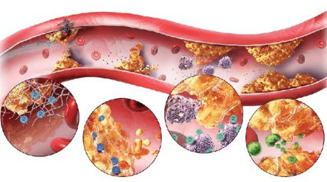
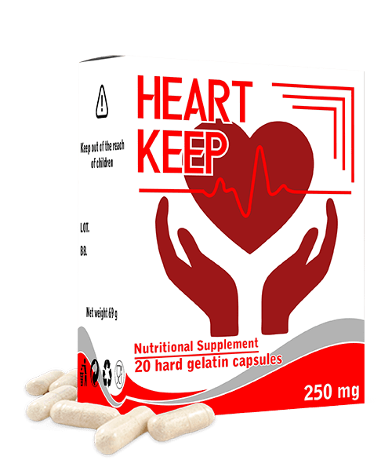
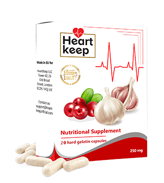

| Jake
Santos
Matandang edad, hindi hadlang sa buhay! 55-taong-gulang Doc Willie Ong, nagbahagi ng sikreto sa
mahabang buhay at magandang kalusugan
Isang Filipino na kilalang doktor ng pamilya, espesyalista sa kardyolohiya, propesor, at nagkamit ng gantimpala sa larangan ng medisina, ibinahagi ng 55 anyos na si Willie Ong ang lihim kung paano palagiang maramdaman na 40 ka pa rin.
Ayon kay Doctor, ang sikreto ng mahabang buhay ay ang mga malulusog na
blood vessels. Kapag malilinis at malulusog ang mga iyon, madali kang makakaabot sa edad na 120 o
higit pa, at mananatili kang malusog.
Nakapanayam ng aming correspondent si Ong. Si Doctor ay nagpaliwanag
kanyang paraan ng pagpapahaba ng buhay sa pamamagitan ng paglilinis ng mga blood vessels
- Doctor, maraming beses na sinabi ninyo na ang mga malinis na blood
vessels ay ang batayan ng magandang kalusugan. Bakit po, sa tingin ninyo?
Madali iyan.
Ang paggana ng lahat ng mga internal organs at systems natin ay depende sa kalidad ng daloy ng dugo. Kasi,
ano ba naman ang daloy ng dugo? Ito ay ang pagdadala ng oxygen at nutrisyon sa mga internal organs at ang
pagkuha at pag-alis ng carbon dioxide at metabolic waste. Kapag bata pa tayo, lagi tayong gumagalaw, at bago
pa ang mga blood bessels natin: banat pa, malinis pa at sapat pa ang nutrisyon sa bawat organo. Pero, pag
tumatanda na tayo, mas kaunti na tayong gumagalaw, at narurumihan na rin ang mga blood vessels natin. Marami
naman ang mga dahilan - hindi lamang iyong mga mapanganib (tulad ng paninigarilyo, hindi tamang nutrisyon,
maruming kapaligiran, sedentary (laging nakaupo) lifestyle), pero medyo natural pa rin (halimbawa, ang lipid
deposition na nangyayari sa lahat ng tao)
Ano naman ang mga maruruming blood vessels? Isipin mo ang
mga tubo na puno ng kalawang. Ano bang nangyayari sa mga tubo na puno ng kalawang? Tumataas ang presyon ng
tubig, at nagiging pait ang lasa niyan. Pare-pareho lang iyong nangyayari sa mga blood vessels. Kapag may
kolesterol o iba pang mga sangkap na naiipon sa loob ng mga daluyan ng dugo, pagtaas ng presyon ng dugo
(pangunahing sanhi ng hypertension ang mga maruruming vessel ng dugo!). Tapos, narurumihan na rin ang iyong
dugo, at nagiging mahina ang daloy ng dugo. Ang resulta: lahat ng mga organo at sistema (na siyang binubuo
ng ating katawan) ay napinsala. Kasi, pati na rin ang balat ay isang sistema
Ano ang dulot nito sa
iyo? Mas mabilis ka nang tumatanda. Pero, kapag nililinis mo kung minsan ang mga blood vessel mo, mabubuhay
ka ng hanggang edad na 120. Bukod dito, kapag malinis ang ating blood vessels, mas hindi tayo magkakasakit -
sa anumang organo, at saka, gagana rin nang maayos ang utak natin. Ang ibig sabihin, sa pamamagitan ng
paglilinis ng mga blood vessels, sigurado mong mapapahaba ang iyong buhay at kalusugan. Hindi ito theory
lamang. Noong natrabaho pa ako bilang doktor, inirekumenda ko ito sa mga pasyente ko at ngayon ay ginagawa
ko ito sa sarili ko. Ang lahat sa mga sumunod sa payo ko, mas malusog at mas masigla na sila kaysa sa mga
kagulang nila

Kaya, unti-unting narurumihan ang mga blood vessels. Kung hindi mo pa kailanmang
nalinis ang mga iyan, kapag mahigit 40 taong gulang ka na, masyadong marumi na ang mga blood vessels mo.
Kaya, sa madaling panahon ay makakaapekto ito sa iyong kalusugan, o kaya naman baka naapektado na
iyan
Anu-ano naman ang mga masamang maidudulot ng pagkakaroon ng maruming blood
vessels?
Sabi ko na, ang buong katawan ay nahihirapan dahil dito. Pero, syempre, ang
unang napipinsala ay ang mga organo at mga sistema ng katawan na may direktang kaugnayan sa sirkulasyon ng
dugo, ibig sabihin, ang cardiovascular system.
Mga maidudulot ng pagkakaroon ng maruming blood
vessels:
- Atherosclerotic vascular disease. Tumitigil sa paggana ang mga blood vessels:
nababarado ang mga maliliit na blood vessels, at sobrang dumarami ang cholesterol na naiipon sa mga
malalaki.
- Cardiac ischemia. Nangyayari ito dahil sa regular na kakulangan ng daloy ng dugo sa mga
coronary vessel, na dulot ng maruruming vessels.
- Stroke. Dahil sa hindi sapat na daloy ng dugo sa utak, nagsisimulang mamatay ang nerve
endings. Nagdudulot iyo sa pagkawala ng ilang mga function ng utak.
- Hypertension. Nangyayari ito nang kumikipot ang mga blood vessels dahil sa pagiging
marumi. Nagdudulot ito sa pagtaas ng blood pressure.
- Phlebeurysm "Varicose veins". Hindi lamang sa mga binti ito nangyayari "na madalas na
pinag-aalala ng mga babae", kundi pati na rin sa loob ng katawan. Isa sa mga maidudulot ng varicose
veins ay ang hemorrhoids o almoranas.
- Venous and arterial thrombosis. Kapag matagal na narurumihan, isang blood clot ang
maaaring mabuo sa mga blood vessels. Humahantong ito sa pagkamatay ng vessel, at, dahil dito, pwede ring
mamatay ang mga cells sa partikular na organ. Kapag pumapasok sa dugo ang namuong blood clot, maaari
itong humantong sa pagbara ng mga daluyan ng dugo sa puso. Nagdudulot ito sa atake sa puso, na
nakamamatay sa 70% ng mga kaso.
Madalas itong nangyayari! 4 times na mas maraming tao ang namamatay dahil sa mga
karamdaman sa cardiovascular system kumpara sa kamatayang dulot ng iba pang mga karamdaman. Alam ito ng mga
doktor, alam nila na dapat linisin ang mga blood vessels, pero walang ganoong practice dito sa Pilipinas, di
ko alam kung bakit. Maraming mga doktor ang nagrereseta ng mga tabletas sa hypertension para mapababa ang
blood pressure. Pero, hindi sila nakapagpapagaling kundi nagbibigay ng pansamantalang epekto na lang. Pero
yung dapat gawin mo ay linisin ang mga blood vessels. Sa Europe at sa America, matagal na ginagawa ito ng
lahat ng mga taong mahigit edad 35-40. Ibig sabihin, doon, alam ng lahat ng mga tao na dapat linisin ang
blood vessels. Bakit wala tayo nito dito sa Pilipinas? Malaking katanungan ito para sa
akin.
- Mayroon bang nakikitang sintomas ng maruming mga blood
vessels?
Oo syempre. Ito ang mga pangunahing sintomas:
- Migraine - sakit ng ulo;
- Mahina ang memorya;
- Laging pagod;
- Insomnia;
- Problema sa pakikipagtalik;
- Humina ang paningin at pandinig;
- Mataas na blood pressure;
- Dyspnea at angina pectoris;
- Maputla ang balat sa mga binti;
- Sakit ng joints at kalamnan;
Pero, kahit kapag wala kang mga sintomas na ito, kailangan mo ring linisin ang mga blood
vessels mo, tuwing 5 taon matapos sumapit sa edad na 30. Kung gagawin mo iyon, mananatili kang malakas at
malusog palagi.
Sa totoo lang, mabilis na dumumi ang mga blood vessels, lalo na kapag matanda na
tayo. Kahit kapag hindi ka kumakain ng burgers o french fries kada araw. Kahit kapag kumain ka ng isang
sausage o scrambled egg, sapat na iyon para may ilang cholesterol sa mga walls ng blood vessels mo. Tapos,
dumarami at naiipon ang naturang dumi sa loob ng mga blood vessels.
- Pwede ba ninyong
ibahagi sa amin ang inyong sikreto ng paglilinis ng mga blood vessels?
Hanggang kamakailan lamang, tumagal
ng maraming buwan ang buong proseso. Ako mismo ang humanap, pumili at pumitas ng mga halamang
panggamot, natagpuan ko ang mga iyon sa palengke o nag-order sa Internet, tapos gumawa ako ng mga
gamot. Sa ngayon, hindi ko ito ginagawa, kasi kamakailan lamang, ang mga kasamahan ko sa National
Cardiology Research Center (NCRC) ay lumikha ng isang gamot na panlinis ng mga blood vessels na mas
maganda at mas mura ang presyo. Ang tawag nito ay
HeartKeep. Isa itong gamot sa
hypertension na nagsasaayos ng blood pressure. Nakapagpapagaling ito sa mataas na blood pressure
dahil nililinis nito ang mga blood vessels. Kaya, perpekto ito para sa mga layunin natin.

Napakaganda ng
HeartKeep, dahil sa pamamagitan nito, kahit
na kapag napakarumi na ng mga blood vessels mo, kaya mong linisin iyan sa loob ng 1-2 linggo lang
kung regular mo itong ginagamit.
Gusto ko ring sabihin na ang gamot na ito ay hindi naglalaman ng mga kemikal kundi
mga highly concentrated extract lamang galing sa mga halamang panggamot na maganda sa paglilinis ng mga
blood vessel. Kaya hindi ito nakakapinsala sa katawan, kundi naman kapaki-pakinabang.
May mga dating
pasyente ko na nagpapatingin pa rin sa akin, kabilang sa mga ito ang mga gustong maglinis ng blood vessels.
Sa ngayon, itong gamot na ito lamang iyong inirerekumenda ko sa kanila. Ang lahat sila ay natulungan
nito.
May mga opisyal na statistics sa website ng NCRC sa paglilinis ng mga blood vessels, na nakuha
sa mga clinical study. Sa kabuuan, mga 2700 pasyente ang lumahok sa pananaliksik. Lahat sila ay sumailalim
sa buong treatment course sa pamamagitan ng
HeartKeep.
Mga Resulta ng
Pananaliksik:
- Naayos ang blood pressure matapos ang 1-2 araw ng paggamit ng gamot - 99% ng mga kalahok
- Naayos ang heart rate matapos ang isang treatment course - 98% ng mga kalahok
- Kumpletong pag-alis ng cholesterol sa mga blood vessels matapos ang isang treatment course - 99% ng mga
kalahok
- Naging mas epektibo ang pagpapagamot sa mga chronic illneses - 99% ng mga kalahok
- Bumuti ang pangkalahatang kalusugan - 100% ng mga kalahok
- Walang masamang side effects ang gamot - 100% ng mga kalahok
- Magkano ba ang HeartKeep, at saan po ito mabibili?
Marami nang gamot ngayon ang sobrang mahal ang
presyo. Kaya, ayoko na namang magrekomenda ng anumang gamot na mahal ang presyo. Ang
HeartKeep na ito naman, abot-kayang lang ito, lalo na ngayon.
Ito ang
pangunahing gamot sa listahan ng Philippine Hypertension Control Program na pinondohan ng pamahalaan. Sa
ilalim ng programang ito, ang gamot na ito ay maaaring matanggap ng simumang
tao.
Paano tanggapin ang
HeartKeep, delivery kahit
saanman sa Pilipinas.
Para makakuha ng
HeartKeep, kailangan mong:
- Punan ang application form sa website.
- Pagkatapos nito, tatawagan ka ng manager para tukuyin ang shipping address
- Matapos ang 5-7 araw matapos i-deliver, tatanggap ka ng parcel na may HeartKeep sa
post office.
Para mapanatiling malinis ang mga blood vessels mo, inirerekumenda kong ulitin ang
treatment course tuwing 1-2 taon. Lalo na, kailangang gawin ito ng mga may edad 40 pataas Sa gayon, maaari
mong palakasin ang iyong kalusugan at maantala ang pagtanda. Kasi, mga malinis na blood vessels talaga ang
susi sa kalusugan.
- Maraming salamat po sa kawili-wiling pakikipanayam, Doctor
Ong

Lumang presyo: 3,900 ₱
Bagong presyo: 1,950 ₱
Mag-order ng HeartKeep sa 50% na diskwento.
Binabati kita!
Nakakuha ka ng 50% na diskwento para sa HeartKeep!
OK
Mga Komento
Grace

Salamat!!! Interesting talaga. Inorder ko na rin ang HeartKeep
Mike

Nag-order na rin ako at nag-try ng HeartKeep. Dati, 6 taon na
nahihirapan ako sa hypertension. Kaya, matagal na hindi maayos ang blood pressure ko. Pinayuhan din ako
ng doktor ko na linisin ko ang blood vessels ko. Matapos ang isang buwan ng paggamit ng HeartKeep, bumalik sa normal na ang pressure ko! 2 buwan na wala akong
hypertension. Iba talaga ang buhay kapag wala kang high blood. Mas maganda na yung pakiramdam ko. Kaya,
inirerekumenda ko rin ito sa inyong lahat, at saka, maganda yung presyo nito ngayon
Chris

Ginamit ko rin itong HeartKeep na to. Nakikita ko rin na mas
maganda na rin yung pakiramdam ko. Parang naging mas bata ako.
Ana Garcia Cruz

Salamat!!! Nag-order na rin ako. Yung maganda, may delivery sila - kaya maidedeliver
saanman sa bansa.
Rodrigo

Nakuha ko ito kagabi. Ito ang photo ng gamot. Linisin na namin ni misis ko mga vessels
namin. Kamakailan lang nagpa check up kami - nasira na rin ang mga blood vessels namin dahil sa
cholesterol
Denise

Noong last month, nagpagamot din ako gamit yung HeartKeep.
Paminsan-minsan eh tumaas pa rin yung bp, tsaka minsan eh hindi tama yung heart rate. 2-2.5 weeks lang
ginamit ko yun. BP ko, hindi na tumataas. Pakiramdam ko gumaling na ako talaga.
Jonathan

‘62 na ako. 5 taon na ring naglilinis ako ng mga blood vessels ko. Maganda iyon para
manatiling malakas at malusog. Wala akong kahit anong sakit, at marami sa mga kagulang ko naman, patay
na. Nakikipagtalik pa rin ako, sorry po, baka masyadong bastos. Anyway, dapat linisin ang mga blood
vessels!
Pauline

Iginamot ko rin sa high blood ang gamot na ito. Matagal na nahihirapan ko dahil sa high
blood. Tapos, nagka diabetes ako at saka nagkasakit pa rin ang aking kidney. Mahina talaga ang memorya
ko at paningin. Buong buhay ko eh nagpapagamot ako. Pero wala talagang nakatulong sakin. So, baka
susubukan ko yung HeartKeep. First time na nag-order ako ng gamot sa Internet.
Madali pala yun.
Rosa

Salamat! Kamakailan lang nakapanuod ako ng isang programa tungkol sa gamot na to sa
GMA. Maraming doktor daw sabi na maganda siya. Sabi din nila na dapat mong linisin yung mga blood
vessels mo.
Roman Aquino

Maganda ito talaga. Tama iyon! Dati, laging 140/90 yung bp ko. Ilang taon na. Matapos
yung treatment course, naging 125/85. Kaya, gumagaling na ako, ayos!
Angelica D.

Binasa ko ang tungkol sa gamot na to sa website nila. Kahanga-hanga talaga!
John C.

Nag-order na rin ako! Salamat!
Daniel

Isang buwan na ginagamit ko to (dahan dahan pa, ayokong sumobra) Mas maganda na rin
yung pakiramdam ko. Mayroon na akong lakas, tsaka mas maganda na yung immune system ko. Parang 10 taon
na mas bata na ako. 72 na ako.
Clara

Ginamit ko rin yung HeartKeep. Nagustuhan ko yung effect. Noong
marumi pa yung mga blood vessels ko, lagi akong pagod, pero ngayon masiglang masigla na ako. Mas marami
na akong nagagawa sa loob ng isang araw. Dati, madalas na masakit ang ulo ko, hindi ito masakit ngayon.
Mas masarap na ang tulog, tsaka, marami pang bagay ang naging mas maganda na sa buhay ko.